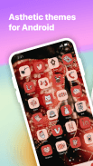
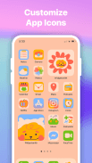

ThemeKit app 版本进化史——从壁纸工具箱到审美生态的五年
从早期只有壁纸和图标包的简单工具，到今天覆盖主题库、锁屏定制、DIY 编辑器、AI 辅助创作的完整生态，梳理 ThemeKit app 的版本演进逻辑
现状：2026 年的 ThemeKit 是什么样
现在打开 ThemeKit app官网，或者直接从官方下载装上试试，你看到的是一个功能相当丰满的审美工具箱——主题库按风格分成极简、动漫、节日、赛博朋克等十几个分类，锁屏编辑器支持 iOS 16 以来的景深壁纸和动态岛，DIY 编辑器能从零拼出自己的主题，Pro 订阅还解锁了 AI 辅助创作和社区发布。

但如果你三年前用过 ThemeKit，印象可能完全不同——那会儿它还只是一个「换壁纸和图标包」的简单工具，没有锁屏定制，没有金币体系，甚至没有 DIY 编辑器。回看这五年的迭代，它的成长逻辑其实很有意思：跟着系统的新特性走，同时在内容侧不断加深护城河。
来路：从壁纸替换到锁屏革命
ThemeKit 的早期版本，核心功能就是两个：壁纸库和图标包库。用户打开 App，挑一张壁纸、换一套图标，完事。这类工具在 iOS 和 Android 生态里都不罕见，ThemeKit 能活下来，靠的是主题库的内容质量——它不是随便搜罗网图，而是有专门的设计师团队做节日限时主题，春节、情人节、万圣节、圣诞节，每个节点都有对应风格上架，节后下架，限时独供。这个策略从早期就定下来了，一直延续到今天，甚至 Pro 订阅里还加了节日主题的增强包。
转折点出现在 iOS 16 发布之后。苹果首次开放锁屏定制 API，ThemeKit 几乎第一时间跟进，推出了锁屏小部件、景深壁纸、自定义时间字体这些功能。这个版本是 ThemeKit 真正从小工具变成「平台」的节点——锁屏编辑器不仅要适配 iOS WidgetKit 的各种限制（比如刷新频率最低 30 分钟、小部件尺寸固定不能调），还要解决景深效果的三个前提条件（照片有深度数据、构图有层次、时间颜色设置正确）。样本文档里那篇 iOS 16 锁屏故障排查，列了五个典型问题和对策，其实侧面反映了那次版本迭代的复杂度——团队花了大量精力在适配系统新特性的打磨上，而不是在 UI 或体验上做花哨改进。
Android 这边，ThemeKit 也没闲着。Control Center 快捷开关、桌面小部件的灵活尺寸（Android 系统原生支持网格）、自定义 Launcher 配合，都是同一时期陆续补上的。两个平台的锁屏能力差异（iOS 重统一体验、Android 重自由度）在 ThemeKit 的实现里也很明显——iOS 锁屏小部件尺寸固定、最多五个，Android 那边灵活得多。ThemeKit 选择的策略是各做各的最优解，不强行统一，这点很务实。

商业化与内容护城河：金币体系和 Pro 订阅
锁屏定制站稳脚跟之后，ThemeKit 开始补商业化。免费版的策略很清晰：浏览全开放、基础功能可用、但每次「有价值的操作」都弹广告或花金币——一键应用主题弹 15~30 秒视频广告，换单个图标也弹，高级小部件要么看广告要么攒金币解锁。金币体系的设计也挺狠：一条完整广告 +5 金币，一个 Pro 专属主题要 100~500 金币，换算下来等于看半小时到一小时的广告才能解锁一个主题。
这个定价策略引发了不少吐槽，Google Play 评论区里高频出现「每次点任何东西都弹广告」的抱怨。但从版本演进的角度看，这其实是团队在内容侧投入后的必然选择——他们一直在死磕主题和审美的内容生产（节日限时主题、极简美学主题、赛博朋克主题……十几个分类，每个分类下几十套主题），这些都不是随便搬运就能搞定的。金币体系本质上是在用时间成本换付费转化：免费用户要么花时间看广告、要么花钱买 Pro。Pro 订阅解锁全部主题、无广告、DIY 编辑器导出分享、AI 辅助创作，定价也不算离谱。
有意思的是，免费版里有几个功能完全无广告——壁纸应用、Control Center 使用、DIY 编辑器自己做主题（但导出分享是 Pro 专属）。这说明团队也在留有余地：不想把免费用户逼走，用「壁纸随便换」当钩子留住人，同时把金币消费集中在主题应用和图标替换这两个高成本环节。
迭代规律：死磕内容和系统适配，不管什么
从版本演进的节奏里能清楚看到团队的优先级。
他们一直在死磕的两件事：
第一，主题内容的审美和运营。 节日限时主题的上架时间表（提前 2~4 周预告、节日当周上架、节后 2~4 周下架）、Pro 专属的节日增强包、极简/赛博朋克/Low Poly 等风格的精细化分类——这些都需要持续的设计师投入和运营节奏把控。ThemeKit 不像同类工具那样靠搬运网图凑数，它的主题库是真正在做内容产品。
第二，紧跟系统的新特性。 iOS 16 锁屏、iOS 17 实时活动、Android 桌面小部件网格——每一次系统开放新的定制 API，ThemeKit 都是第一批跟进的开发者。样本文档里那篇 iOS 16 锁屏的五个问题，说明团队不仅做了功能上线，还花了大量精力在故障排查和体验打磨上，甚至在 ThemeKit app文档 里写出了完整的「iOS vs Android 锁屏差异对照表」，帮用户理解为什么有些限制不是 ThemeKit 能解决的。
而他们一直没怎么管的事：
Android 深度定制。 相比 iOS 锁屏的精细打磨，Android 那边的功能明显更粗——Control Center 开关、桌面小部件，但没有类似 iOS 景深效果的深度特性，也没有对各家厂商定制系统（MIUI、ColorOS、OneUI）做专门适配。这可能是资源分配的问题：iOS 生态统一，做一套适配覆盖所有设备，ROI 高；Android 碎片化，每家厂商系统都不一样，投入产出比差很多。
社区生态的完整度。 Pro 订阅里有「社区发布」的 Beta 功能，但样本文档里几乎没提社区相关的内容——没有论坛、没有用户作品广场、没有创作者分成机制。对比同类工具里做得好的社区（比如 Zedge 的创作者市场），ThemeKit 的社区还停留在很早期的阶段。这可能是下一步要补的方向，但还没成为当前迭代的重点。
预判：从工具到生态的下一步
照这个迭代规律推，ThemeKit 下一步大概率走的是「AI 辅助创作 + 社区生态」这条线。
AI 辅助创作已经在 Pro 订阅里做了基础版——用户可以用 AI 生成壁纸、生成图标变体。但从样本文档的描述来看，这个功能还比较早期，没展开讲具体怎么用、能生成什么质量的内容。按 ThemeKit 团队一贯的打磨风格，AI 功能不会停留在「有就行」的阶段，后续应该会往「根据用户选的主题风格、自动生成一套匹配的壁纸+图标+小部件组合」的方向发展，甚至可能和 DIY 编辑器打通，让用户用 AI 草稿 + 手动微调的方式完成主题创作。
社区生态是另一个待补的短板。现在 ThemeKit 的内容生产主要靠内部设计师团队，但主题库已经十几个分类、每个分类几十套主题，单靠内部产能很难持续扩张。如果能把社区发布做扎实——让用户自己设计的主题通过审核后上架，设计师赚分成，那 ThemeKit 就能从「内部生产内容的工具」变成「用户生产内容的平台」，护城河会厚很多。
当然，以上都是从迭代规律推的猜测，不当官方口径传。ThemeKit 过去五年的成长逻辑很清晰：内容做深、系统做全、商业化跟上但不杀鸡取卵。只要这条路线不变，下一个版本周期里，它大概率会从一个「换主题的 App」变成一个「审美创作和分享的生态」。